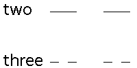
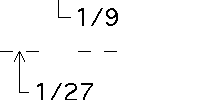
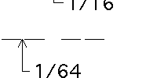

The paper models made in this lab have been inspired by the book Fractal Cuts by Diego Uribe and the article "Fractal Cards: a space for exploration in geometry and discrete mathematics," The Mathematics Teacher, 91, (1998), 102-108, by Smmit and Davis. The sculptures illustrate two types of fractals, Cantor sets and the Sierpinski Gasket.
| We will first look at the classic Cantor middle thirds set. |  |
| Next we compute the sum of the lengths removed in forming the Middle Thirds Set. |  |
| Removing lengths in different proportions can give a fat Cantor set. |  |
| Also, we shall make paper folds based on the Sirepinski Gasket. |
Return to Fractal Folds.